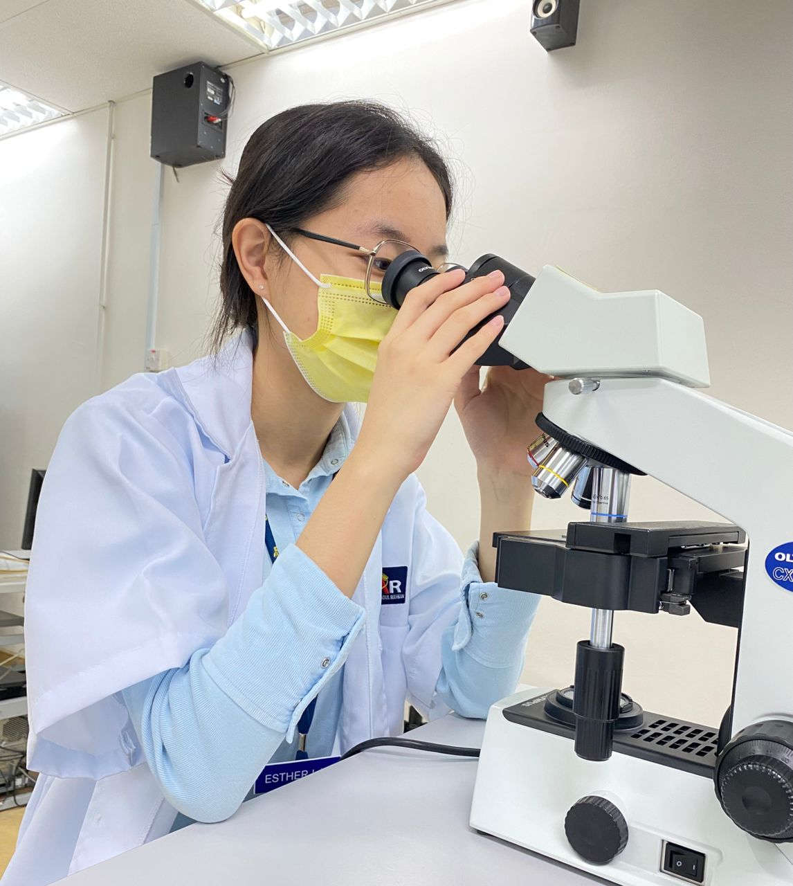
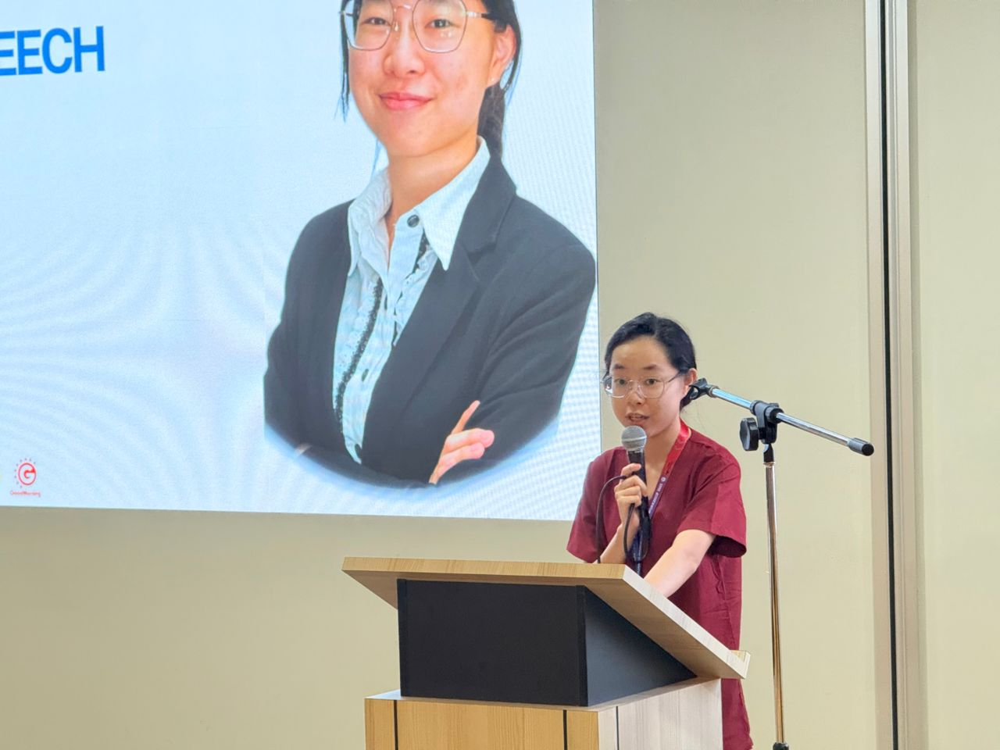
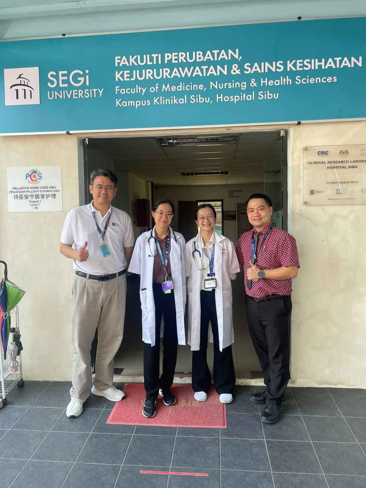
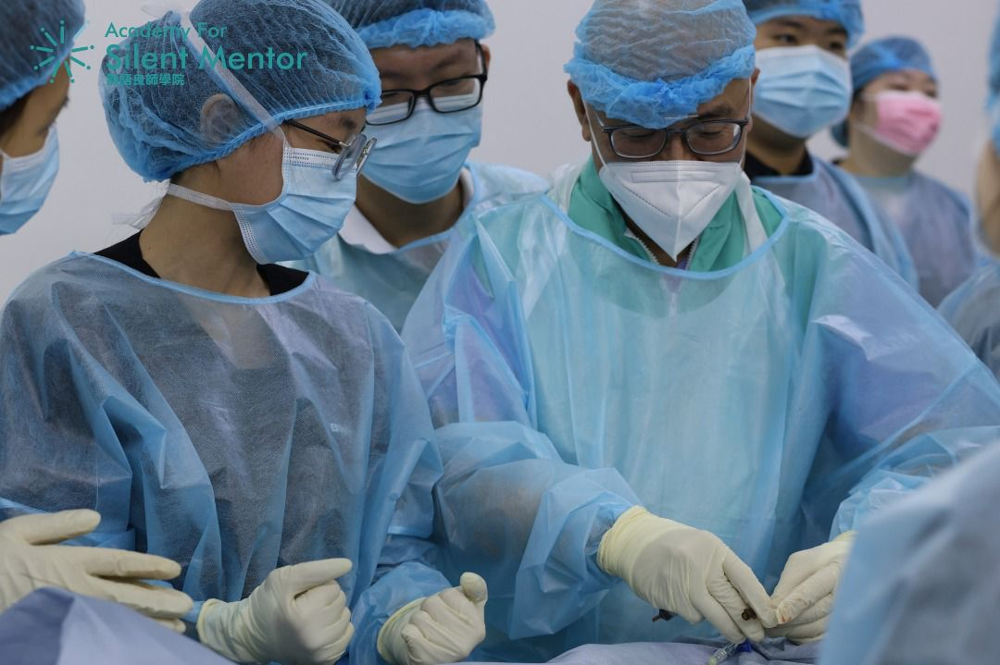
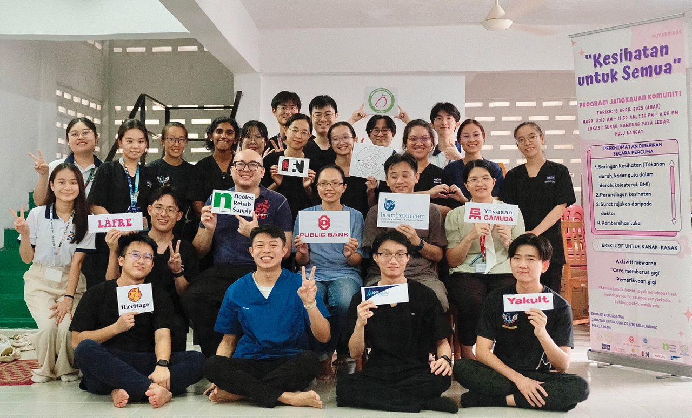
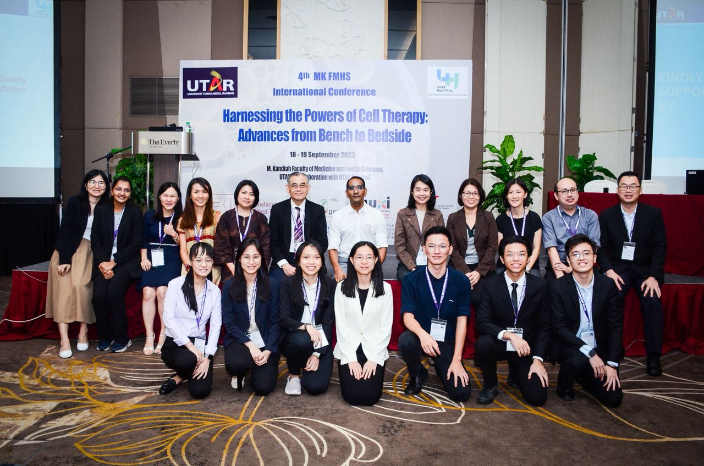

My Story

Currently pursuing my degree at UTAR, I’m on an exciting journey
through the world of medicine — where curiosity meets care and
every challenge is a lesson.

From helping patients to leading health initiatives, I believe in
making healthcare more human. I’m passionate about learning, connecting,
and creating change — one heartbeat at a time.

Whether I’m conducting health screenings for Indigenous communities or
guiding fellow students in surgical workshops, I’m driven by one thing:
making a real difference in people’s lives.

My journey in medicine isn’t just about treating illnesses — it’s about listening,
learning, and building bridges between people and their health.

I love blending leadership with laughter — from chairing national medical events to
simply being the go-to person when someone needs encouragement or a cheerful word.

Born in Sarawak, raised with curiosity, and now studying in Selangor — my path has
been one of growth, discovery, and a touch of adventure.